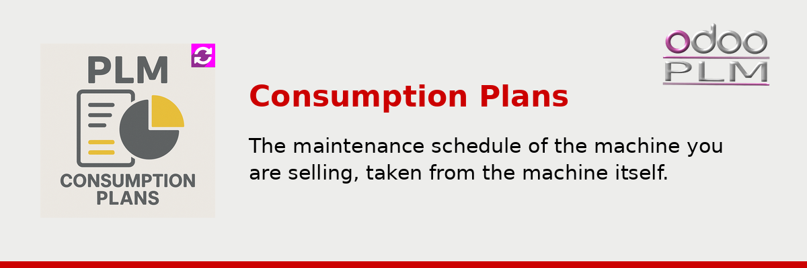

<!-- The Apps store rewrites every <a> of a module description into a <span>, so a
     link here looks clickable and does nothing: addresses are printed as text.
     Inline styles, the bootstrap grid and the oe_ classes survive. The palette is
     the company one: #CC0000 for the accents, #000000 for the outlines. -->
<div class="container">
    <div class="oe_styling_v8">
        <div class="container p-3 mb-3">
            <div class="container pt-0 px-4 pb-5">
                <div class="row">
                    <div class="col-12">
                        
                    </div>
                </div>

<div class="row">
                    <div class="col-12 px-4">
                        <h2 class="font-weight-bold"
                            style="font-family:'Montserrat', sans-serif !important; font-size:2rem; color:#CC0000">
                            Overview
                        </h2>
                        <hr style="border: 2px solid #000000 !important; background-color: #000000 !important; width: 50px !important; margin-left: 0 !important; margin-top: 8px;">
                        <h3 class="oe_slogan" style="text-align:left; color:#000000">
                            The maintenance schedule of the machine you are selling, taken from the machine itself.
                        </h3>
                    </div>
                </div>

                <div class="row">
                    <div class="col-12 px-4">
                        <p style="font-size:18px; text-align:justify">
                            This module produces the plan of maintenance interventions for a machine:
                            a table that says, component by component, after how many hours of service
                            each intervention falls due and what state the part has reached by then.
                            The plan is built on the bill of material of the machine, so it describes
                            the machine that was actually configured and sold.
                        </p>
                        <p style="font-size:18px; text-align:justify">
                            The maintenance plan is a document the customer expects with the machine,
                            and it is almost always written by hand: a table in a word processor,
                            copied from the last similar machine, adjusted where somebody remembers a
                            difference. It ages the moment a component is changed, and nobody notices
                            until a service engineer arrives with the wrong interval.
                        </p>
                    </div>
                </div>

                <div class="row" style="margin-top:2rem">
                    <div class="col-12 px-4">
                        <h2 class="font-weight-bold"
                            style="font-family:'Montserrat', sans-serif !important; font-size:2rem; color:#CC0000">
                            What it does
                        </h2>
                        <hr style="border: 2px solid #000000 !important; background-color: #000000 !important; width: 50px !important; margin-left: 0 !important; margin-top: 8px;">
                    </div>
                </div>
                <div class="row">
                    <div class="col-6 px-4">
                        <h3 class="oe_slogan" style="color:#000000; text-align:left; font-size:1.3rem">The plan lives on the components</h3>
                        <p style="font-size:18px; text-align:justify">
                            Each part carries what it needs: the hours of service before an
                            intervention falls due, and the state it is in at that point. The plan of
                            a machine is therefore not written, it is assembled from the parts the
                            machine is made of.
                        </p>
                        <h3 class="oe_slogan" style="color:#000000; text-align:left; font-size:1.3rem">Intervention states in your own words</h3>
                        <p style="font-size:18px; text-align:justify">
                            The states are yours to define, so the table speaks the language your
                            service department already uses with customers, instead of a scale that
                            has to be explained in a footnote.
                        </p>
                    </div>
                    <div class="col-6 px-4">
                        <h3 class="oe_slogan" style="color:#000000; text-align:left; font-size:1.3rem">This machine is the exception</h3>
                        <p style="font-size:18px; text-align:justify">
                            The same component can be used harder in one machine than in another. A
                            bill of material line can carry its own plan, marked as independent, and
                            changing it there does not touch the plan of that part in every other
                            machine.
                        </p>
                        <h3 class="oe_slogan" style="color:#000000; text-align:left; font-size:1.3rem">A table to hand over</h3>
                        <p style="font-size:18px; text-align:justify">
                            The plan is printed as a report from the product, which is what turns it
                            into the document that travels with the machine, in the manual and in the
                            hands of whoever will service it.
                        </p>
                    </div>
                </div>

                <div class="row" style="margin-top:2rem">
                    <div class="col-12 px-4">
                        <ul style="padding-left:0; list-style-type:none; margin:0">
                            <li style="font-size:18px; color:#000000; margin:12px 0">
                                <span style="color:#CC0000; font-weight:700">&#9642;</span>&nbsp;&nbsp;Maintenance intervals declared on the components
                            </li>
                            <li style="font-size:18px; color:#000000; margin:12px 0">
                                <span style="color:#CC0000; font-weight:700">&#9642;</span>&nbsp;&nbsp;The machine's plan assembled from its bill of material
                            </li>
                            <li style="font-size:18px; color:#000000; margin:12px 0">
                                <span style="color:#CC0000; font-weight:700">&#9642;</span>&nbsp;&nbsp;Intervention states defined by you
                            </li>
                            <li style="font-size:18px; color:#000000; margin:12px 0">
                                <span style="color:#CC0000; font-weight:700">&#9642;</span>&nbsp;&nbsp;Per machine exceptions, without touching the part everywhere
                            </li>
                            <li style="font-size:18px; color:#000000; margin:12px 0">
                                <span style="color:#CC0000; font-weight:700">&#9642;</span>&nbsp;&nbsp;Printable table, ready to go with the machine
                            </li>
                        </ul>
                    </div>
                </div>

                <div class="row" style="margin-top:2rem">
                    <div class="col-12 px-4">
                        <p style="font-size:18px; text-align:justify">
                            Part of <b>OdooPLM</b>, the Product Lifecycle Management suite by
                            OmniaSolutions. It requires the <b>plm</b> module and describes the
                            reference plan: what the intervention schedule says it should be, not what
                            a machine in the field has actually consumed. Released under AGPL-3.
                        </p>
                    </div>
                </div>

                <div class="oe_centeralign" style="margin-top:24px">
                    <div class="oe_spaced" style="display:inline-block; min-width:300px; margin:10px 12px; padding:14px 22px; border:2px solid #000000; border-radius:10px; text-align:center; vertical-align:top">
                        <span style="font-size:15px; color:#000000">Try the whole suite with Docker</span><br/>
                        <b style="font-size:17px; color:#CC0000">github.com/OmniaGit/DockerOdooPLM</b>
                    </div>
                    <div class="oe_spaced" style="display:inline-block; min-width:300px; margin:10px 12px; padding:14px 22px; border:2px solid #000000; border-radius:10px; text-align:center; vertical-align:top">
                        <span style="font-size:15px; color:#000000">Website</span><br/>
                        <b style="font-size:17px; color:#CC0000">odooplm.omniasolutions.website</b>
                    </div>
                    <div class="oe_spaced" style="display:inline-block; min-width:300px; margin:10px 12px; padding:14px 22px; border:2px solid #000000; border-radius:10px; text-align:center; vertical-align:top">
                        <span style="font-size:15px; color:#000000">Contact us</span><br/>
                        <b style="font-size:17px; color:#CC0000">www.omniasolutions.website/#contact</b>
                    </div>
                </div>

            </div>
        </div>
    </div>
</div>
